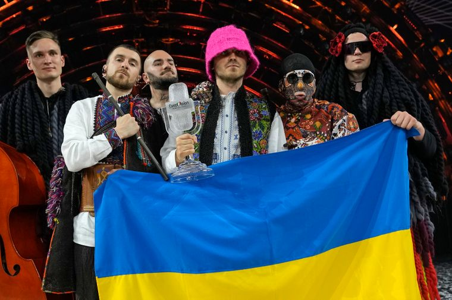

«Kalush» — український реп-гурт, заснований у 2019 році. Названий на честь Калуша - невеликого міста в Івано-Франківській області, звідки родом фронтмен гурту Олег Псюк. "Більшість усіх подій мого життя були в Калуші. Я дуже люблю менталітет цих людей, плюс мені дуже подобається, як звучить Калуш. "Калуш" - це щось серйозне", - розповідає 27-річний Олег Псюк. Фронтмен групи підлітком допомагав на будівництві, копав колодязі й захоплювався музикою. Він закінчив Львівський лісотехнічний університет і мріяв заспівати з Eminem. З його кімнати завжди було чути, як він читає реп, згадує мама Псюка Стефанія. У 2019 році Олег написав у Facebook, що збирає хіп-хоп гурт. І зібрав його. Через два роки Kalush вже мав десятки мільйонів переглядів своїх пісень у Youtube, співпрацю з Alyona Alyona і "Океан Ельзи", а ще контракт з великим американським лейблом Def Jam. Їхню пісню "Додому" наспівує вся країна. Гурт отримав право представляти Україну на Пісенному конкурсі Євробачення 2022 з піснею «Стефанія». 15 травня 2022 року гурт став переможцем «Євробачення-2022».
До гурту входять Олег Псюк (aka Псючий Син) — засновник і соліст, Ігор Діденчук — мультиінструменталіст, МС Килиммен та бек вокаліст Джонні Дивний. Гурт був названий на честь Калуша, рідного міста Олега Псюка
У 2021 році стало відомо про запуск паралельного проєкту — KALUSH Orchestra[12]. На відміну від основного колективу, цей гурт робитиме акцент на реп із фольклорними мотивами та українську автентику. Обидва гурти мають спільних учасників. До учасників Олега Псюка (вокал, тексти), Килиммена (діджей) і Джонні Дивного додалися мультиінструменталісти Тимофій Музичук, Віталій Дужик, Сашко Таб і Олександр Кондратюк. Ще один музикант Ігор Діденчук грав у KALUSH із самого початку, а тепер зосередився на KALUSH Orchestra.
{kind=link}